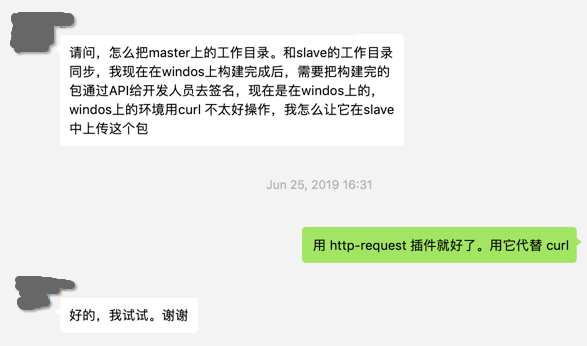
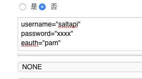
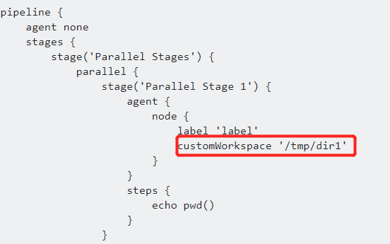

Jenkins 中文社区技术交流微信群问题集之一

申明：下文中的问题是群友发起的，回答则是由笔者收集整理的。
1. 同一流水线，如何做某个阶段定时执行代码扫描
这个需求的意思是存在一条流水线，流水线中的阶段为：构建阶段 –> 代码扫描阶段 –> 发布测试环境阶段 –> … 而提问者希望当有代码提交时，就执行整条流水线。当到某个时间点时，就只执行扫描阶段。
回答一
当代码没有变化，我们为什么要重复执行扫描呢？
回答二
换成两个流水线，一个提交触发，一个定时触发
回答三
一条流水线加个开关设置是否跳过扫描。
2. 有人做过增量包构建么？
有人做过增量包构建么？问下要用哪些插件，怎么做？ 经确认，提问人的需求是有一个代码仓库 x，然后 x 里有 a,b,c 三个模块，开发提交了 a 模块的代码，这时，只打包 a 模块的制品。
回答一
要做的是在流水线里判断提交代码中修改了哪个模块，然后执行你的 ant 命令指定构建某个模块就好了。代码 demo 如下：
pipeline{
agent any
stages{
stage('build a'){
when{
changeset "a/**"
}
steps{
echo "build a"
}
}
stage('build b'){
when{
changeset "b/**"
}
steps{
echo "build b"
}
}
}
}
回答二
增量包，四五年前我有过相关实践，构建工具也是 ant。记得当初是根据修改的文件路径，解析出 ant target 列表，然后根据事先声明好的依赖关系对它排序，然后执行 ant 构建命令，最后将生成的二进制包挑出来生成增量包，大致这么个思路。
3. post 里如何指定 agent
请教一下，jenkinsfile中 post里面可以指定agent吗？
回答
post {
always {
node('master') {
cleanWs()
}
}
}
笔者注：node('<node>') 中的 <node> 可以是 agent 节点名称，也可以是 agent 的标签。
4. windows 上 无法使用 curl
有些步骤是跑在 Windows 节点上，在 Windows 上又希望能发 http 请求。
回答
这时，应该使用 HTTPRequest 插件，它是平台无关的。
4. 怎么把 slave 的内容 copy 到 master 机器上？
因为比如我用有一个 windows 节点，然后我代码拉取后，需要进行一些测试，测试完成后生成数据和 HTML 报告，这部分测试全都在节点上完成，我想把测试完成后到数据发到 master 上，然后由 master 生成 html 报告
回答
不确定，我是否理解正确。可以考虑这样做，把你现在的事情分成两个阶段，阶段一在 windows 上测试，然后将数据和 html 报告上传到某个地方，阶段二，将数据和报告下载回来，比如下载到 master 上。接着，想干嘛就干嘛了。
5. httpRequest 如何发 POST 请求
httprequest这个插件 请求body这块一行一个参数？ 
回答
httpRequest authentication: credentialName, contentType: 'APPLICATION_JSON_UTF8', httpMode: 'POST', requestBody: """{"reportJson": "111","id": "111","executeNum": 111}""", responseHandle: 'LEAVE_OPEN', url: "http://127.0.0.1/echo"
6. 我仓库特多，怎么设计流水线
我的仓库一共有4个 分别存放 代码 战斗脚本 资源 协议。4个代码仓库各有3个分支 名字都是对应的，比如1号仓库分支 master develop production. 2号仓库 也是这几个分支 以此类推 我拉取代码进行打包的时候 会拉取 4个仓库名字都叫 master 的分支 或者名字都叫 develop 的分支进行打包 现在问题就出在 我拉取4分仓库都叫 master 的分支的时候 拉取完代码后 最后一个仓库的代码会把前个仓库的代码覆盖掉，后来有老哥给了建议 用 dir 分别存到 workspace 下的好几个目录 现在遇到的问题是 我多分支流水线第一次启动时，会把1号仓库的代码直接拉到 workspace 下 我的问题就是可以不可在多分支流水线第一次启动时，不要拉取代码
回答
建立一条流水线，接受 gitlab 触发，然后根据触发请求中的数据，决定拉取哪个代码仓库。参考 Generic Webhook Trigger 插件。
7. 流水线中如何指定工作目录
pipeline 中怎么指定这个流水线的工作目录，我在开头定义 WORKSPACE 但是没用
回答

8. 如何在 pipeline 中使用第三方 jar 包
请教下 pipeline 需要引用第三方 jar 包时，要放在哪里才能被 import 进来啊，我放到 classpath 下还是不行，总是提示找不到包。在本地执行 groovy，impor t进来没有问题
回答
把 jar 包放到 tomcat 安装 jenkins 的目录下的 lib 里貌似能解决。
后记
如果读者朋友在使用 Jenkins 过程中也遇到各种问题，可关注Jenkins微信公众号。后台回复“微信群”入群。群里会有热心朋友回复。